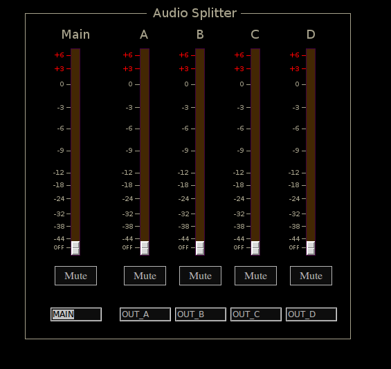

Asplit
 Previous( SS2 )
Next( Bandpass )
Home
Contents
Synth Catalog
Previous( SS2 )
Next( Bandpass )
Home
Contents
Synth Catalog
Split audio signal 4 ways.
Buses
inbus, Audio input
outbusA, Audio output A
outbusB, Audio output B
outbusC, Audio output C
outbusD, Audio output D
Asplit parameters
- gainA, Output amp A (0,2)
- gainB, Output amp B (0,2)
- gainC, Output amp C (0,2)
- gainD, Output amp D (0,2)
- unmuteA, Mute switch A (0,1) 1 = mute
- unmuteB, Mute switch B (0,1) 1 = mute
- unmuteC, Mute switch C (0,1) 1 = mute
- unmuteD, Mute switch D (0,1) 1 = mute
- gain, Master amp (0,2)
- unmute, Master mute (0,1)
Previous( SS2 ) Next( Bandpass ) Home Contents Synth Catalog